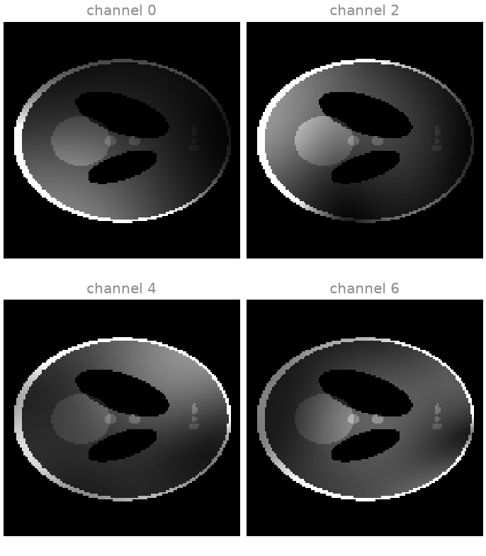
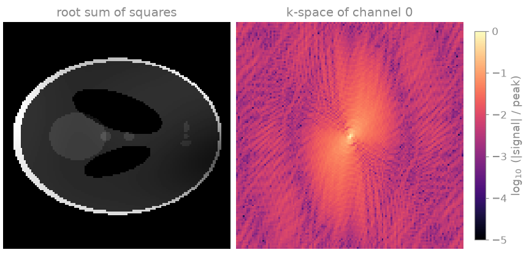
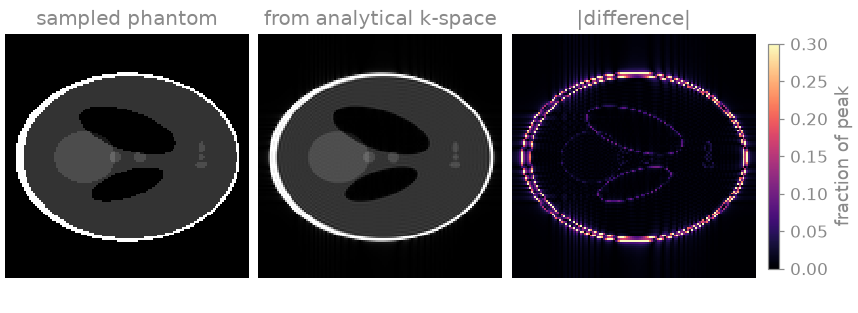
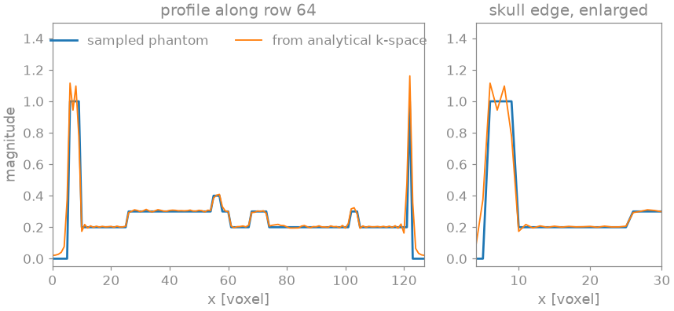

Note
Go to the end to download the full example code.
Tensors and commands#
This first lesson establishes how MR data from BART appear in Python: how a multichannel image and its k-space are laid out as tensors, which Fourier convention BART uses to go from k-space to the image, and how a BART command is called. Every later lesson relies on these conventions. A reconstruction that is off by a factor of \(\sqrt{N}\), or by a half-voxel shift from a misplaced k-space centre, is a consequence of misreading one of them.
bartorch runs BART inside the Python process. Every BART command is a function
of bartorch.tools or of the bartorch namespace that takes and returns
torch.Tensor objects, with no files and no subprocess in between. The
lesson simulates a receive-array acquisition of BART’s analytical Shepp-Logan
phantom, transforms it between image space and k-space, checks the transform
against NumPy, and runs the same command once more through BART’s command line.
Learning objectives
Relate a C-order tensor shape to BART’s dimension vector, and locate the receive-channel axis.
Generate a phantom as an image, as coil images and as analytical k-space.
State the centring and normalization of
bartorch.fft(), and verify them againstnumpy.fft.fftn().Explain why analytically simulated k-space, truncated to the acquired matrix, reconstructs with Gibbs ringing.
Call a BART command from Python, and the same command from its command line.
The next lesson, From k-space to image, reconstructs an undersampled acquisition with the functions introduced here.
import tempfile
from pathlib import Path
import numpy as np
import torch
import bartorch
import bartorch.tools as bt
SIZE = 128
COILS = 8
Array layout#
BART stores an array in Fortran order and describes it by a dimension vector
whose first entry varies fastest: readout (x), then the phase-encoding
directions (y, z), then the receive channels in BART’s dimension 3,
and further dimensions for sets of sensitivity maps, echoes, frames and so
on. A tensor holding the same bytes in C order has the reversed shape, so no
copy is needed between the two: a two-dimensional multichannel image is
(coils, 1, y, x), with the singleton standing for BART’s z, and the
readout direction is the last tensor axis.
Data layout and conventions tabulates the layouts used throughout.
bartorch.tools.phantom() is BART’s phantom command. Without
coils it returns the Shepp-Logan image; with coils it returns that
image weighted by the complex receive sensitivities of BART’s analytical
eight-channel head array, one image per channel.
image = bt.phantom(SIZE)
coil_images = bt.phantom(SIZE, coils=COILS)
print(f"image {tuple(image.shape)}, {image.dtype}")
print(f"coil images {tuple(coil_images.shape)}")
print(f"BART dimensions of the coil images {list(reversed(coil_images.shape))}")
image (128, 128), torch.complex64
coil images (8, 1, 128, 128)
BART dimensions of the coil images [128, 128, 1, 8]
Each channel sees the object through its own sensitivity profile: bright
near the coil element, dark on the opposite side of the head. The root sum
of squares (RSS) over the channel axis, \(\sqrt{\sum_c |x_c|^2}\), is
the standard magnitude combination of a receive array; it recovers the
object with the residual shading of the summed sensitivity magnitudes.
bartorch.rss() takes the channel axis as a tensor index, as every
function of this package does, rather than as BART’s bitmask.
combined = bartorch.rss(coil_images, axes=(0,))
print(f"combined {tuple(combined.shape)}")
combined (1, 128, 128)

Fourier transform#
The measured signal of a channel is the Fourier transform of its coil image,
sampled on the k-space grid. bartorch.fft() is BART’s centred
discrete transform: the k-space centre (DC) and the image centre are both at
index n // 2, which is how k-space is displayed and how scanners
deliver it. The transform is unnormalized unless unitary=True. For an
even matrix size the centred transform equals NumPy’s transform between
ifftshift and fftshift, which gives a reference computed outside
BART.
kspace = bartorch.fft(coil_images, axes=(-2, -1), unitary=True)
shifted = np.fft.ifftshift(coil_images.numpy(), axes=(-2, -1))
reference = np.fft.fftshift(np.fft.fft2(shifted, norm="ortho"), axes=(-2, -1))
difference = np.abs(kspace.numpy() - reference).max() / np.abs(reference).max()
print(f"largest difference from numpy, relative to the peak: {difference:.1e}")
largest difference from numpy, relative to the peak: 1.7e-07
The difference is single-precision round-off. The unitary transform preserves the \(\ell_2\) norm (Parseval’s theorem), so white noise has the same standard deviation in k-space and in the image, a property the noise and SNR lessons rely on.
print(f"norm ratio image/k-space: {float(coil_images.norm() / kspace.norm()):.6f}")
norm ratio image/k-space: 1.000004

The k-space magnitude, drawn on a logarithmic scale, spans five orders of magnitude: the signal energy is concentrated at the centre, which sets the image contrast, while the periphery carries the edges and fine detail. This distribution is what variable-density undersampling exploits in the next lessons.
Analytical k-space#
kspace=True evaluates the Fourier transform of the phantom’s ellipses
analytically at the k-space sample positions, rather than transforming the
sampled image. The two are different data. The continuous object has
infinite spatial-frequency extent, and an acquisition of a finite matrix
truncates it at \(\pm k_{\max}\); its inverse transform therefore
carries Gibbs ringing, the oscillation next to every sharp edge that
truncation artefacts produce on a scanner. The DFT of the sampled image,
by contrast, reproduces that image exactly. Simulating data with the same
discrete model the reconstruction inverts, the inverse crime
[1], removes this discretization error from a simulation;
analytical k-space retains it and is therefore the more realistic test
data.
analytical = bt.phantom(SIZE, kspace=True)
truncated = bartorch.ifft(analytical, axes=(-2, -1))
error = float((truncated - image).norm() / image.norm())
print(f"relative difference from the sampled phantom: {error:.3f}")
relative difference from the sampled phantom: 0.218


The difference map is largest at the ellipse boundaries and decays with
distance from them. The profile through the centre of the phantom shows the
ringing directly: the image from analytical k-space overshoots at every
intensity step and oscillates with a period of about two voxels next to it. The
unnormalized inverse transform is used here because phantom scales its
k-space so that the unnormalized inverse returns the image’s intensities.
Commands and the command line#
A function of bartorch.tools passes BART’s options as keyword
arguments, under their long names or their single-letter flags, and reverses
the dimension vector of each tensor it hands over. The bartorch console
command takes BART’s own command lines and operates on CFL files, so a script
written for the bart executable runs against the same library;
bartorch.cli.main() runs one such command line in the current process.
bartorch.io.writecfl() takes an array in BART’s order, which the
transpose of a C-order array is.
with tempfile.TemporaryDirectory() as directory:
source, target = str(Path(directory) / "coils"), str(Path(directory) / "kspace")
bartorch.io.writecfl(source, coil_images.numpy().T)
status = bartorch.cli.main(["fft", "-u", "3", source, target])
from_files = torch.as_tensor(bartorch.cli.read(target))
print(f"exit status {status}, identical to bartorch.fft: {torch.equal(from_files, kspace)}")
exit status 0, identical to bartorch.fft: True
-u requests the unitary transform and 3 is BART’s bitmask for its
dimensions 0 and 1 (readout and first phase-encoding direction), the last
two tensor axes. The two routes run the same BART function on the same
bytes, so the results are identical.
A BART command is not recorded by autograd: its result has no gradient with
respect to its inputs. The operators of bartorch.linop and the solvers
of bartorch.optim, introduced from
Operators and solvers on, are differentiable.
Interfaces and execution describes both routes.
References#
Total running time of the script: (0 minutes 0.874 seconds)